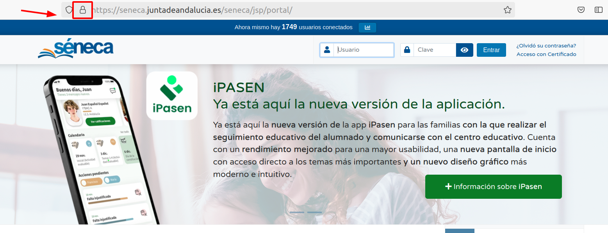
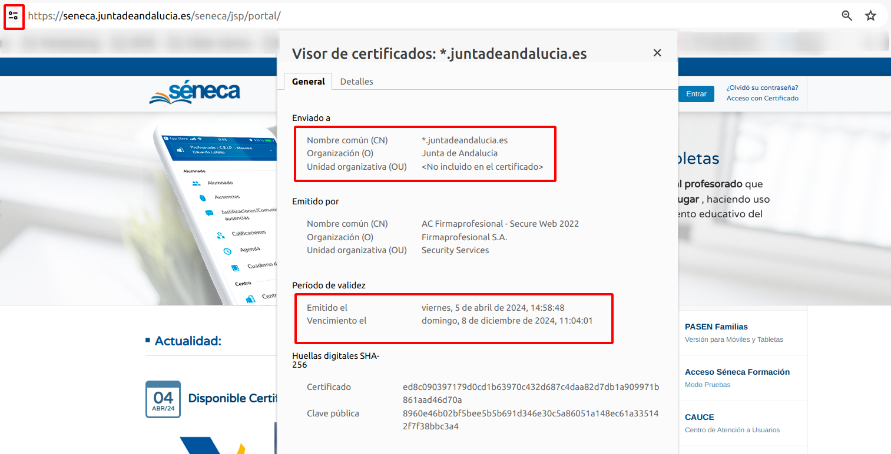
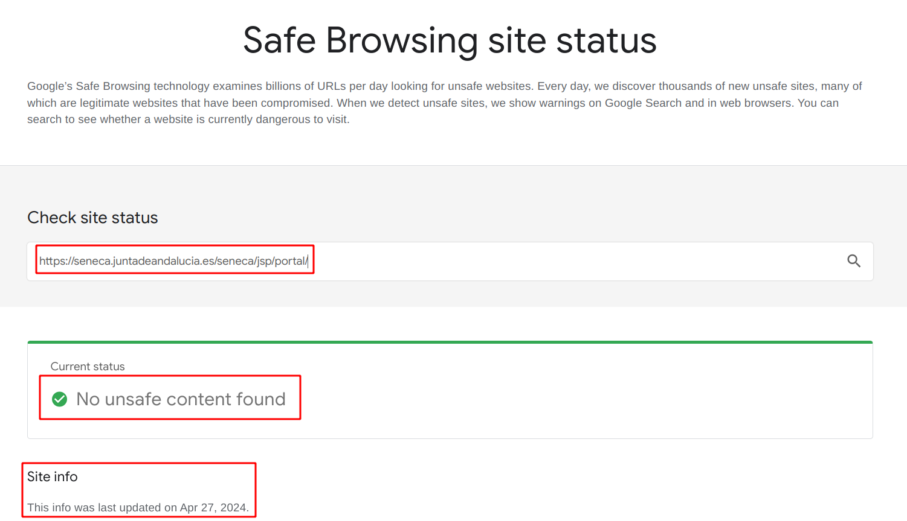
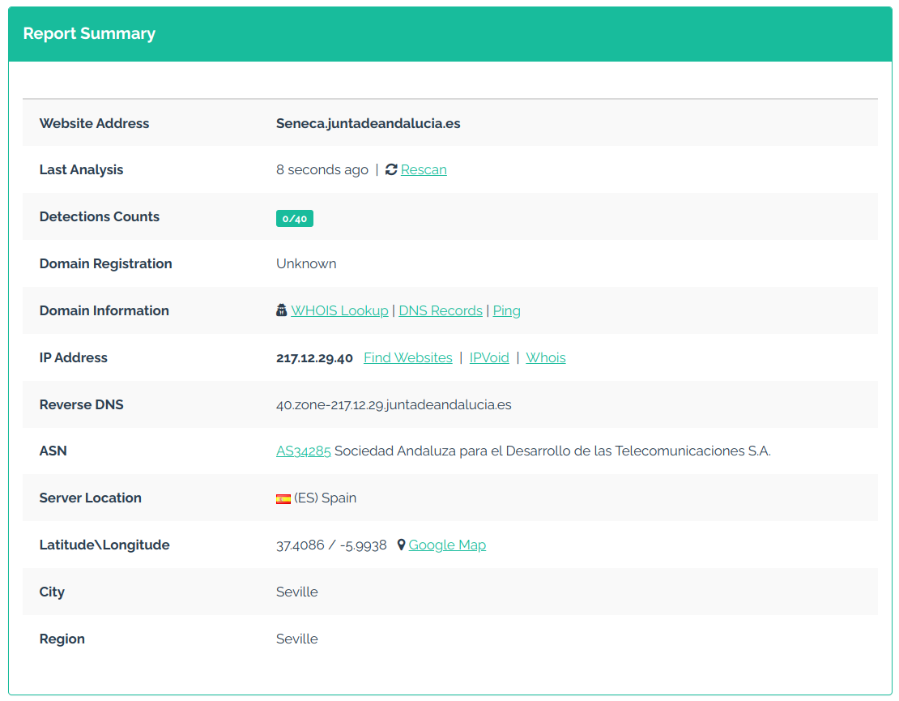
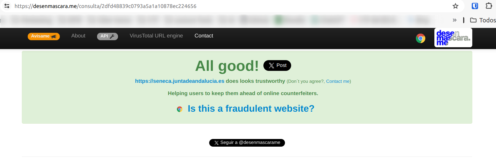
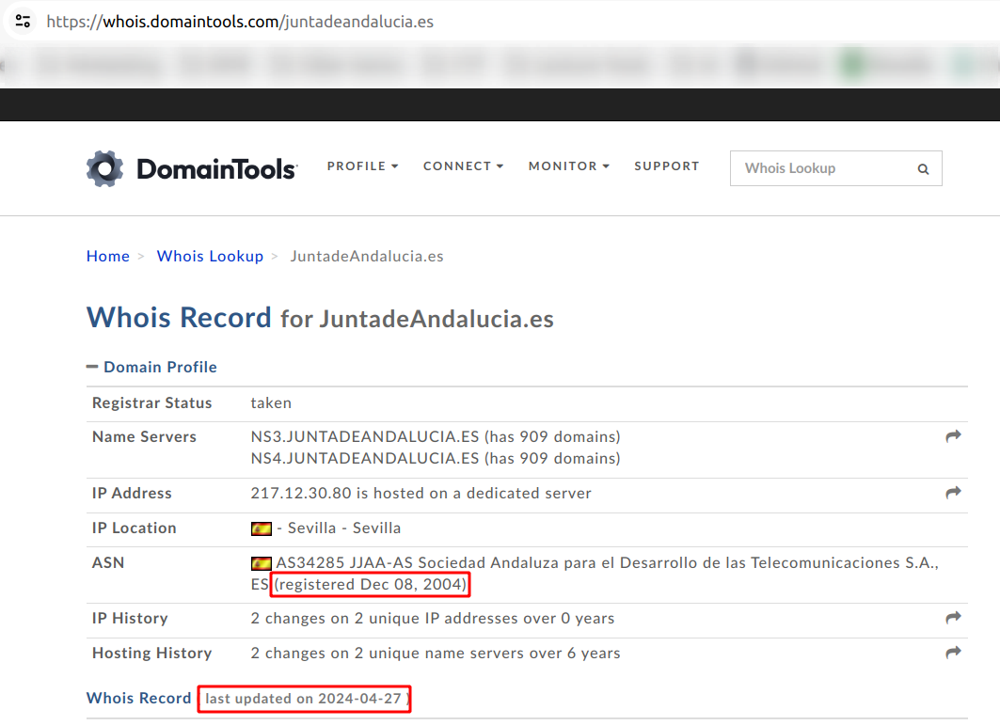
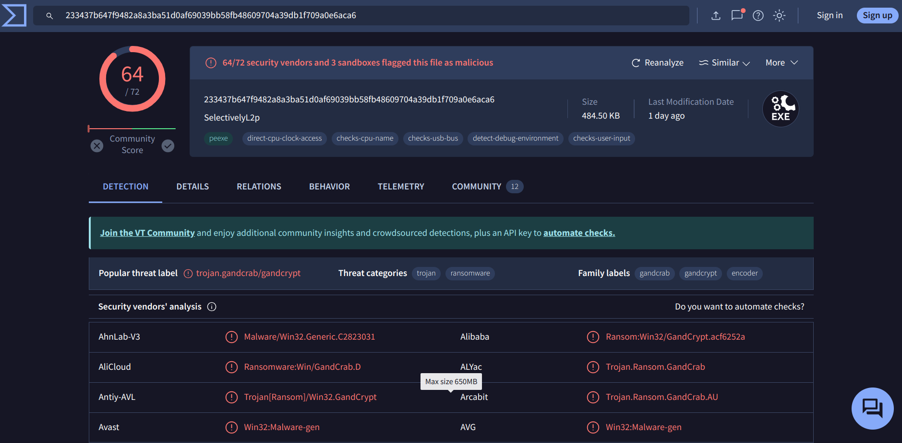

En el bloque 'Navegadores intrépidos', nos sumergimos nuevamente en las aguas turbulentas de internet, pero esta vez con un enfoque diferente: la seguridad. Si en el módulo anterior exploramos el arte de navegar desapercibido, ahora nos adentramos en el desafío de navegar, identificando y eludiendo las trampas cibernéticas que acechan en cada esquina con determinación y conocimiento.
Convertirte en un navegador intrépido implica no solo comprender los riesgos, sino también estar preparado para enfrentarlos con resolución. Desde los astutos ataques homográficos hasta las sutiles amenazas que se ocultan en descargas aparentemente inofensivas, aprenderás a detectar y evadir las trampas que acechan en cada clic.
Este bloque te proporcionará las herramientas y estrategias necesarias para navegar por internet con seguridad y confianza. A lo largo de este viaje, exploraremos estrategias clave para navegar de manera segura y mantener a raya a los ciberdelincuentes.
Los ataques homográficos son engaños donde se emplean caracteres similares en URLs para confundir y dirigir a las personas a sitios web falsos.
Los ciberdelincuentes crean sitiosweb fraudulentos que buscan robar información confidencial, como contraseñas, detalles de pago o información personal que pueden usar para robar tu identidad. Algunos sitios web falsos pueden incluso infectar tu dispositivo con malware o engañarte para que compres productos inexistentes o falsificados.
No te dejes engañar por un diseño aparentemente profesional. Los ciberdelincuentes han perfeccionado sus técnicas y pueden crear sitios web que parezcan legítimos. Investiga la reputación y la procedencia del sitio antes de confiar en él.
Mantén una actitud escéptica y crítica al navegar. Si algo te parece demasiado bueno para ser verdad, probablemente lo sea. En este bloque de contenido, vamos a estudiar cómo proteger tu seguridad digital y aprender a identificar los sitios web fraudulentos que acechan en la red.
Objetivos:
Desarrollar la habilidad para identificar señales de alerta en sitios web que sugieran prácticas fraudulentas.
Entender y aplicar métodos efectivos para verificar la autenticidad de un sitio web antes de compartir información personal o financiera.
Lecturas recomendadas:
Análisis de una web de venta falsa (INCIBE). El artículo analiza una tienda online fraudulenta que vende productos de ropa, calzado y complementos.
Estas son algunas de las formas más comunes en las que los estafadores utilizan sitios web falsos:
Tiendas online falsas con ofertas demasiado buenas para ser verdad. Los estafadores crean tiendas online falsas que ofrecen ofertas increíbles y luego publican anuncios en las redes sociales. Estos sitios roban tu información de pago o te engañan para que compres productos fraudulentos.
Páginas de inicio de sesión con contraseñas falsas. Los estafadores crean sitios que parecen páginas de inicio de sesión (tu banco, Netflix, etc.) y luego incluyen enlaces a ellos en mensajes de phishing.
Ventanas emergentes maliciosas que descargan malware. Los delincuentes informáticos crean ventanas emergentes en sitios web legítimos que descargan malware en tu dispositivo.
Sitios web falsos de atención al cliente. Los estafadores se hacen pasar por empresas de soporte técnico e intentan que les demos acceso remoto a nuestro ordenador.
Sitios web fraudulentos de seguridad social o seguros médicos. Los delincuentes también pueden atacar tu información médica creando sitios web falsos que te piden que “verifiques” tu número de seguridad social.
Sitios web falsos de entrega de paquetes. Con el aumento de las compras en línea, los estafadores crean sitios web falsos que figen ser agencias de transporte como, UPS, Seur, Correos.
Sitios web falsos de reserva de vuelos. Recientemente, han comenzado a crear sitios web falsos de reserva de billetes de avión que roban tu información personal o te venden billetes falsos.
Cómo identificar sitios web falsos
Los sitios web falsos están por todas partes y cada vez son más difíciles de detectar. A continuación, te mostramos cómo puedes asegurarte de no estar tratando con un sitio web fraudulento:
1. Verifica detenidamente el nombre de dominio: La forma más sencilla de saber que estás en un sitio web falso es cuando el nombre de dominio no coincide con el sitio web oficial de la empresa. Por ejemplo, los estafadores suelen utilizar nombres de dominio similares (o incluso que contienen) la URL oficial dentro del nombre de dominio falso.
A continuación se muestran algunos ejemplos de cómo los estafadores falsifican dominios de sitios web:
bancosanttander.es/particulares (agregando una “t” adicional)
Paypal.com.secure-site.com (en este caso, el nombre de dominio es en realidad “secure-site.com”, no “paypal.com”)
seneca.juntadeandaIucia.es/ (usando una “i” mayúscula en lugar de una “l” minúscula)
Netflix-support.net (combinando un dominio falsificado con una extensión de dominio diferente)
2. Busca el símbolo de un candado (pero no confíes en él como único medio de verificación): Todos los navegadores web (como Safari, Firefox y Google Chrome) muestran si un sitio tiene lo que se llama un "certificado de seguridad". Este certificado, también conocido como certificado SSL, verifica que cualquier información que envíes al sitio no pueda ser interceptada por delicuentes informáticos.

Licencia: Dominio público
Desafortunadamente, los estafadores ya usan certificados SSL para engañarnos y hacernos creer que sus sitios falsos son genuinos. Si no estás seguro acerca de un sitio, haz clic en el candado y verifica cualquier información adicional sobre el certificado de seguridad.

Licencia: Dominio público
Busca detalles como el nombre de la empresa registrada, el país de origen, la provincia o estado y la localidad, validez del certificado. Todas estas son señales de que el sitio web utiliza un nivel más alto de seguridad, conocido como “certificado de validación de organización (OV)”, que es más difícil de falsificar para los estafadores.
3. Utiliza un verificador de sitios web o herramientas de navegación segura: Un verificador de sitios web te ayuda a verificar si es seguro visitar un sitio web. Por ejemplo, te indica si el sitio utiliza cifrado para proteger tus datos, junto con el nivel de certificado de verificación del sitio.
Existen algunos buenos recursos gratuitos que puedes utilizar para comprobar si un sitio web es seguro. En el bloque anterior ya vimos algunos de ellos, pero veamos algún otro recurso más que puede resultar interesante:
El Informe de transparencia de Google es un recurso gratuito que examina miles de millones de URL diariamente para encontrar sitios web inseguros o comprometidos.

Licencia: Dominio público
URLVoid es otra herramienta que escanea las URL en busca de contenido peligroso y las compara con bases de datos de sitios web fraudulentos conocidos.

Licencia: Dominio público
La plataforma desenmascara.me analiza sitios web para determinar si son fraudulentos o no.

Licencia: Dominio público
Además tienen un plugin para Google Chrome que nos puede ayudar a detectar webs fraudulentas a la vez que navegamos, sin necesidad de ir a la web de la herramienta.
4. Busca mala ortografía, problemas de diseño y otras señales de alerta: Los estafadores se mueven rápidamente y, a menudo, no quieren tardar demasiado en crear sitios web falsos (ya que podrían identificarse como fraudulentos y ser eliminados rapidamente). Al igual que los correos electrónicos y mensajes de texto fraudulentos, los sitios web de phishing a menudo incluyen fallos y errores básicos que las empresas legítimas no pasarían por alto.
5. Verifica la antigüedad del dominio (cuánto tiempo ha estado activo el sitio): Los sitios web falsos rara vez permanecen en línea por mucho tiempo. Una forma de saber si un sitio web es real o falso es comprobar cuánto tiempo ha estado activo mediante el rastreador de dominios Whois Lookup.

Licencia: Dominio público
6. Ten cuidado con las ofertas que parecen demasiado buenas para ser verdad: Los estafadores saben que estás dispuesto a dejar de lado tus sospechas a cambio de un buen trato.
Licencia: Dominio público
7. Busca reseñas de usuarios y compruebe si hay informes de estafas: En un esfuerzo por parecer más legítimos, los estafadores suelen publicar reseñas falsas en sus sitios web. Pero al mismo tiempo, los clientes reales (que podrían haber sido estafados) también pueden escribir reseñas advirtiéndote sobre sus experiencias. A continuación, se indican algunos consejos para detectar reseñas falsas:
Hay muchas reseñas que suenan similares.
Las reseñas carecen de detalles que incluiría un comprador real.
Ten cuidado si te encuentras con reseñas genéricas que son inusualmente positivas y carecen de descripciones precisas de la experiencia del producto.
8. Lee la política de envíos y devoluciones: Las páginas oficiales tienen un apartado que detalla su política de envío y devolución. Si el sitio web en el que te encuentras no explica cómo devolver un artículo, es una estafa.
9. Cuidado con las opciones de pago no tradicionales: A veces, los sitios web falsos intentan obligarte a pagar productos utilizando métodos de pago no reversibles o no rastreables, como tarjetas de regalo, transferencias bancarias, criptomonedas o aplicaciones de pago como Zelle, Cash App y Venmo.
10. No te dejes engañar por “señales de confianza” (premios, logotipos de seguridad, etc.): Los estafadores saben que a los clientes les supone mucho trabajo investigar una marca para asegurarse de que sea legítima. También saben que es más probable que los consumidores compren en un sitio que muestre pruebas sociales de su credibilidad, como premios de la industria, certificaciones o logotipos de seguridad.
Cómo denunciar sitios web fraudulentos
Denunciar a través de los Navegadores:
Google: Puedes denunciarlo directamente a través de su departamento Safebrowsing en Reporte de Navegación Segura.
Mozilla Firefox: Abre Firefox, navega al sitio web fraudulento, haz clic en el icono del candado en la barra de direcciones, selecciona "Informar de este sitio web" y sigue las instrucciones para reportarlo.
Microsoft Edge: Abre Edge, navega al sitio web fraudulento, haz clic en los tres puntos verticales en la esquina superior derecha, selecciona "Ayuda y comentarios", luego "Enviar comentarios" y elige la opción "Sitio web no seguro".
Denunciar ante Organismos Oficiales:
En España, puedes interponer una denuncia ante las Fuerzas y Cuerpos de Seguridad del Estado, como la Policía Nacional, la Guardia Civil, la Ertzaintza o los Mossos d'Esquadra. Puedes realizar la denuncia presencialmente en una comisaría o a través de los portales web de estos organismos.
Denunciar ante el INCIBE:
El Instituto Nacional de Ciberseguridad (INCIBE) ofrece varios canales para reportar casos de fraude: Línea gratuita de Ayuda en Ciberseguridad 017, formularios de contacto para ciudadanos, empresas y menores, y buzón de su Centro de Respuesta a Incidentes de Seguridad en incidencias@incibe-cert.es.
Actividad (opcional): Que no te den ‘gato por liebre’
Descripción: Pon a prueba tus habilidades de detección de fraudes online con un test diseñado por el INCIBE. Accede al siguiente enlace y realiza el test de autoevaluación: Ponte a prueba VIII: ¿Cuánto sabes sobre ciberseguridad?. Este test te ayudará a evaluar tu capacidad para identificar estafas y prácticas de seguridad cuestionables en internet.
El software se ha vuelto indispensable en nuestras vidas cotidianas. Ya sea para trabajar, estudiar o simplemente entretenernos, dependemos cada vez más de aplicaciones y programas informáticos. La posibilidad de obtener este software de manera gratuita a través de descargas piratas puede ser muy tentadora. Pero, ¿realmente vale la pena correr los riesgos?
El software pirata conlleva una serie de peligros que no deberían ignorarse. Uno de los principales problemas es la presencia de malware y virus. Estos programas maliciosos pueden dañar gravemente tu dispositivo, robar tus datos personales e incluso secuestrar tu sistema para pedir un rescate.
Pero los problemas no se limitan solo a la seguridad. Descargar y utilizar software pirata también puede acarrear consecuencias legales.
aplicaciones y programas informáticos
El software pirata es la copia, distribución o uso no autorizado de software protegido por derechos de autor.
Objetivos:
Concienciar sobre los riesgos y las consecuencias legales y de seguridad asociadas con la descarga y uso de software pirata.
Identificar fuentes seguras de software y fomentar la adopción de prácticas responsables en la instalación y mantenimiento de software legítimo.
Lecturas recomendadas:
Riesgos de descargar e instalar software pirata (InfoSegur). Un artículo que explora los riesgos asociados con el uso de software pirata, incluyendo la exposición a malware y las consecuencias legales.
Peligros del software pirata (Licendi). Este artículo detalla cómo el software pirata no solo pone en riesgo la seguridad informática, sino que también afecta el rendimiento del sistema y viola los derechos de autor.
Si no lo veo, no lo creo
Cuando descargamos archivos de internet, ya sea software, juegos, aplicaciones móviles o cualquier otro tipo de contenido, es importante tener en cuenta que, si no lo hemos descargado de fuentes oficiales, pueden contener amenazas como virus, malware o código dañino. Esto no solo aplica al software pirata, sino a cualquier archivo que obtengamos en línea, incluyendo adjuntos de correo electrónico.
Para asegurarnos de que un archivo es seguro antes de abrirlo o ejecutarlo, te recomendamos utilizar la herramienta de análisis de virus de VirusTotal. Es un servicio gratuito que permite escanear archivos y enlaces en busca de contenido malicioso utilizando más de 70 motores antivirus diferentes.
Simplemente sube el archivo que deseas analizar a VirusTotal o introduce la URL del enlace, y la herramienta te proporcionará un informe detallado sobre si el archivo contiene algún tipo de amenaza. Esto te permitirá tomar la decisión informada de si es seguro abrir o ejecutar el archivo.
A continuación vemos el informe del análisis de una aplicación descargada de una famosa web de descargas de software no legítimo:

Licencia: Todos los derechos reservados
Podemos ver que la aplicación, no solo tiene contenido malicioso, sino que es un ransomware, uno de los tipos de malwares mas dañinos.
Este problema se agrava aún más ya que, habitualmente, para instalar estas aplicaciones necesitamos desactivar el antivirus, permitiendo así que cualquier 'bicho' recién llegado a nuestro dispositivo se mueva a sus anchas.
Malware, virus, y otras aplicaciones maliciosas
Siempre existen alternativas...
Existen páginas web que proporcionan alternativaslegalesy gratuitas al software pirata, permitiéndote obtener programas de forma segura y sin infringir la ley. Algunas de estas plataformas son:
Alternativeto.net: Esta página no aloja los programas en sus servidores, pero enlaza directamente a las páginas oficiales de cada aplicación, ofreciendo alternativas legales y seguras a programas populares.
Filepuma.com: Un repositorio que destaca por su simplicidad y organización, ofreciendo una amplia variedad de programas con capturas de pantalla y versiones antiguas para descargar.
Majorgeeks.com: Especializada en la difusión de freeware, esta web ofrece software propietario de alta calidad de forma gratuita, sin la necesidad de instalar software adicional no deseado.
Estas plataformas te brindan opciones legales y seguras para obtener software sin recurrir a la piratería, protegiendo tu dispositivo y respetando los derechos de autor de los desarrolladores. ¡Recuerda que hay alternativas éticas y legales para obtener el software que necesitas!
Resistiendo al ransomware
El ransomware es un tipo de malware que cifra los archivos de un dispositivo y exige un rescate a cambio de liberarlos. Pero tenemos buenas noticias, siguiendo las medidas de seguridad que hemos visto durante el curso, estamos protegidos.
Veamos unos consejos clave para protegernos de esta amenaza:
Evitar hacer clic en enlaces peligrosos: Mantente alerta y evita hacer clic en enlaces sospechosos que puedan llevar a la descarga de ransomware.
No abrir archivos adjuntos de correos electrónicos sospechosos: Ten precaución al abrir archivos adjuntos de correos electrónicos de remitentes desconocidos o sospechosos, ya que pueden contener ransomware.
Mantener tus aplicaciones actualizadas: Instala las actualizaciones de las aplicaciones y sistema operativo tan pronto como estén disponibles. Muchos ataques de ransomware explotan vulnerabilidades en software desactualizado.
Utilizar software antivirus y antimalware: Asegúrate de tener un buen programa antivirus instalado y actualizado. Realiza escaneos regulares de tu sistema para detectar y eliminar amenazas potenciales.
Realizar copias de seguridad periódicas: Mantén copias de seguridad actualizadas de tus archivos importantes en un disco duro externo y desconéctalo después de crear la copia de seguridad para evitar que también se cifren en caso de un ataque de ransomware.
Siguiendo estos consejos y manteniendo una cultura de seguridad, podrás reducir significativamente el riesgo de ser víctima de ransomware y proteger tus datos de posibles ataques.
Actividad (opcional): Análisis de archivos con VirusTotal
Descripción: Aprende a utilizar VirusTotal para analizar archivos y enlaces y detectar posibles amenazas de seguridad. Esta herramienta te permitirá verificar la seguridad de los archivos antes de abrirlos, especialmente aquellos descargados de internet.
Pasos:
Accede a VirusTotal utilizando el siguiente enlace: VirusTotal.
Selecciona la opción para subir un archivo que desees analizar. Puedes elegir un archivo inofensivo de tu ordenador para comenzar.
Analiza un segundo archivo que hayas descargado recientemente de internet y que consideres potencialmente peligroso, o simplemente uno que desees comprobar.
Observa y compara los resultados de ambos análisis. VirusTotal te proporcionará un informe detallado indicando si se detectaron amenazas.